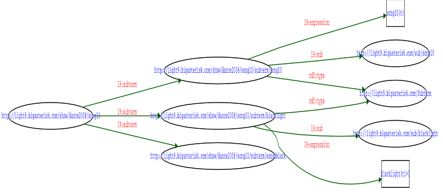

light9 in 2008
Drew Perttula
http://bigasterisk.com/
Existing system
From my June 2005 presentation:
(play cmds)
ascoltami -----------> mpd ------> audio out
| (timing)
v
curvecalc subcomposer keyboardcomposer
| | |
+--- | ----+
\----- | --------/
\--+---/
| (light levels)
v
dmxserver
| (dmx levels)
......... v ....................
. entec open dmx .
external . | (dmx) .
hardware . v .
. dmx dimmer .
. | (juice) .
. v .
. light .
................................
External libraries
- Twisted - event loop and networking, xmlrpc
- tk, tix
- pympd - my twisted interface to mpd
- louie - signals
- mpd - music player daemon
- rdflib
- darcs
What's new: real sliders

- $200 board with 8 motorized faders (plus knobs, lights, and buttons)
- Talks midi over usb
- Python/linux driver is easy:
self.dev = open("/dev/snd/midiC1D0") b0, which, value = [ord(b) for b in self.dev.read(3)] self.dev.write(chr(0xb0) + chr(which[0]) + chr(int(value)))
What's new: RDF for data storage
- Old system: ad-hoc text files.
- Never do this again.
Old file formats
[music] preSong = silence-4sec.wav postSong = silence-15sec.wav
down-l : 0.32005 down-r : 0.3071 down-sides : 0.37 lo-c-cross : 0.24
scoop-r right(t) lo-fill can(t) ch1 chase(t,names=back_colors, ontime=.6, offset=0) * ch1(t)
patch = {
('fill-xl','b31',) : 61,
('broke', 'back8','b32',) : 62,
('blue-xl','b33broke',) : 63,
Storage goals
- Stop inventing and extending syntaxes
- Stop reloading the files all the time. Get incremental updates or query data as it's needed.
- Fancier data structures
- Arbitrary layout of files on disk
- Keep using my most flexible editor (emacs)
New system: RDF
- Most files are RDF data (saved as .n3 or ntriples)
- Syntax(es) are already done, and all values are unambiguously labeled
- Complex data types and relationships are almost as easy as basic ones
- Extensible and upgradable, of course
- Used DSLs and logic programming to abbreviate boring parts
New data, shown as n3
@prefix : <http://light9.bigasterisk.com/> .
@prefix sub: <http://light9.bigasterisk.com/sub/> .
@prefix t: <http://light9.bigasterisk.com/show/dance2008/⤶
song10/subterm/> .
<http://light9.bigasterisk.com/show/dance2008/song10>
:subterm t:blacklight,
t:song10,
t:song3black .
t:song10 a :Subterm;
:expression "song10(t)";
:sub sub:song10 .
t:blacklight a :Subterm;
:expression "blacklight(t)>0";
:sub sub:blacklight .
The same data, in xml
<rdf:RDF xmlns="http://light9.bigasterisk.com/"
xmlns:rdf="http://www.w3.org/1999/02/22-rdf-syntax-ns#">
<rdf:Description rdf:about="http://light9.bigasterisk.com/show/dance2008/song10">
<subterm rdf:resource="http://light9.bigasterisk.com/show/dance2008/song10/subterm/blacklight"/>
<subterm rdf:resource="http://light9.bigasterisk.com/show/dance2008/song10/subterm/song10"/>
<subterm rdf:resource="http://light9.bigasterisk.com/show/dance2008/song10/subterm/song3black"/>
</rdf:Description>
<Subterm rdf:about="http://light9.bigasterisk.com/show/dance2008/song10/subterm/blacklight">
<expression>blacklight(t)>0</expression>
<sub rdf:resource="http://light9.bigasterisk.com/sub/blacklight"/>
</Subterm>
<Subterm rdf:about="http://light9.bigasterisk.com/show/dance2008/song10/subterm/song10">
<expression>song10(t)</expression>
<sub rdf:resource="http://light9.bigasterisk.com/sub/song10"/>
</Subterm>
</rdf:RDF>
A simple line-based format
<http://light9.bigasterisk.com/show/dance2008/song10> <http://light9.bigasterisk.com/subterm>⤶ <http://light9.bigasterisk.com/show/dance2008/song10/subterm/blacklight> . <http://light9.bigasterisk.com/show/dance2008/song10> <http://light9.bigasterisk.com/subterm>⤶ <http://light9.bigasterisk.com/show/dance2008/song10/subterm/song10> . <http://light9.bigasterisk.com/show/dance2008/song10> <http://light9.bigasterisk.com/subterm>⤶ <http://light9.bigasterisk.com/show/dance2008/song10/subterm/song3black> . <http://light9.bigasterisk.com/show/dance2008/song10/subterm/blacklight>⤶ <http://www.w3.org/1999/02/22-rdf-syntax-ns#type> <http://light9.bigasterisk.com/Subterm> . <http://light9.bigasterisk.com/show/dance2008/song10/subterm/blacklight>⤶ <http://light9.bigasterisk.com/expression> "blacklight(t)>0" . <http://light9.bigasterisk.com/show/dance2008/song10/subterm/blacklight>⤶ <http://light9.bigasterisk.com/sub> <http://light9.bigasterisk.com/sub/blacklight> . <http://light9.bigasterisk.com/show/dance2008/song10/subterm/song10>⤶ <http://www.w3.org/1999/02/22-rdf-syntax-ns#type> <http://light9.bigasterisk.com/Subterm> . <http://light9.bigasterisk.com/show/dance2008/song10/subterm/song10>⤶ <http://light9.bigasterisk.com/expression> "song10(t)" . <http://light9.bigasterisk.com/show/dance2008/song10/subterm/song10>⤶ <http://light9.bigasterisk.com/sub> <http://light9.bigasterisk.com/sub/song10> .
Again, with less wrapping
<http://l9.com/show/dance2008/song10> <http://l9.com/subterm> <http://l9.com/show/dance2008/song10/subterm/blacklight> . <http://l9.com/show/dance2008/song10> <http://l9.com/subterm> <http://l9.com/show/dance2008/song10/subterm/song10> . <http://l9.com/show/dance2008/song10> <http://l9.com/subterm> <http://l9.com/show/dance2008/song10/subterm/song3black> . <http://l9.com/show/dance2008/song10/subterm/blacklight> <http://l9.com/expression> "blacklight(t)>0" . <http://l9.com/show/dance2008/song10/subterm/blacklight> <http://l9.com/sub> <http://l9.com/sub/blacklight> . <http://l9.com/show/dance2008/song10/subterm/blacklight> <http://www.w3.org/1999/02/22-rdf-syntax-ns#type> <http://l9.com/Subterm> . <http://l9.com/show/dance2008/song10/subterm/song10> <http://l9.com/expression> "song10(t)" . <http://l9.com/show/dance2008/song10/subterm/song10> <http://l9.com/sub> <http://l9.com/sub/song10> . <http://l9.com/show/dance2008/song10/subterm/song10> <http://www.w3.org/1999/02/22-rdf-syntax-ns#type> <http://l9.com/Subterm> .
Again, rendered with graphviz
What's next: lightsim
- We could really use a good way to preview scenes
- Hard to use text labels for all the different lighting scenes
- Can't work on lighting cues without looking at the stage
lightsim enablers
- Light obeys superposition:
F(ax+by) = aF(x) + bF(y) - All my lights are computer-controlled
lightsim demos
- Original version from 2002: Tk, PIL
- Current version: qt, OpenGL
More
http://delicious.com/drewpca/light9